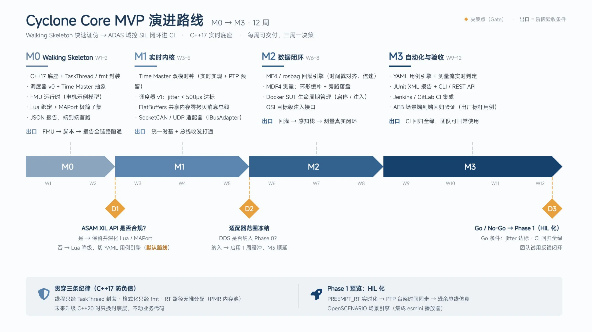
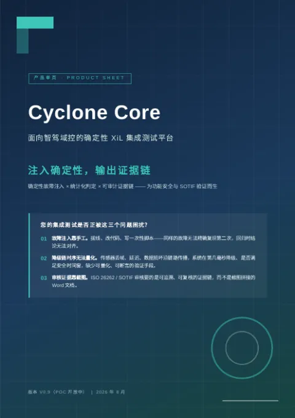

确定性 XiL 场景测试内核
The deterministic XiL scenario testing kernel
Cyclone 把 ADAS / 机器人回归测试收进一条流水线：数据回放 → 故障注入 → 统计判定 → 证据链。PASS 不再是"跑过一次没红"，而是可复现、可审计的机器证明。
Cyclone turns ADAS / robotics regression testing into one pipeline: replay → fault injection → statistical verdict → evidence chain. A PASS is no longer "it went green once" — it is reproducible, auditable machine proof.
cyclone run cases/aeb.yamlmanifest.json：每条 verdict 可回溯到用例版本与原始数据。: every verdict traces to the case version and raw data.每条 PASS / FAIL 可回溯到用例版本与原始数据；证据链格式可按审核要求定制。
Every PASS / FAIL traces to the case version and raw data; evidence formats tailored to audit needs.
Tier1 · 零部件供应商Suppliers叠加在 CANoe / dSPACE / 自研脚本之上；JUnit 输出直接进现有 CI。
Layers on top of CANoe / dSPACE / in-house scripts; JUnit output drops into your CI.
Robotics · 机器人公司Robotics teams单文件二进制下载即跑；一个 YAML 就是一个回归用例。
Single-file binary, download and run; one YAML is one regression case.
虚拟时间回放 + 内容寻址：同 seed 的证据日志逐字节一致。
Virtual-time replay with content addressing: identical seeds produce bitwise-identical evidence logs.
Wilson 置信区间 + SPRT 序贯检验——用统计显著性替代人肉阈值。
Wilson score intervals + SPRT sequential testing — statistical significance instead of hand-tuned thresholds.
case hash + digest + manifest.json：每条 CI 记录可回溯到用例版本与原始数据。
Case hash + SHA-256 digest + manifest.json: every CI record traces back to the case version and raw data.
JUnit XML 开箱即用；rules_cyclone 让场景测试成为 bazel test 一等公民；BES 就绪。
JUnit XML out of the box; rules_cyclone makes scenario tests first-class bazel test citizens; BES-ready.
261 项自动化测试全绿 · JUnit/Jenkins 就绪 · UDS 诊断演示 · Bazel 规则包 rules_cyclone
261 automated tests green · JUnit/Jenkins ready · UDS diagnostics demo · Bazel ruleset rules_cyclone
| Cyclone 不是 | What Cyclone is not | Cyclone 是 | What Cyclone is |
|---|---|---|---|
| 仿真器——CarMaker / Carla 负责"世界有多真" | A simulator — CarMaker / Carla own "how real the world is" | 测试内核——负责"测试信不信得过" | A testing kernel — it owns "how trustworthy the result is" |
| 测试管理平台——管人和流程 | Test management — people and process | 执行引擎——管机器和证据 | An execution engine — machines and evidence |
M0→M3 十二周：Walking Skeleton → 实时内核 → 数据闭环 → CI 验收——每周可交付，三周一决策。
M0→M3 in twelve weeks: walking skeleton → real-time kernel → data loop → CI acceptance. Weekly deliverables, a decision gate every three weeks.


确定性故障注入 × 统计化判定 × 可审计证据链
Deterministic fault injection × statistical verdicts × auditable evidence chain
M0→M3 十二周计划与决策门
The M0→M3 twelve-week plan with decision gates
POC 合作方案（含商务条款）不公开下载，请通过下方联系方式获取。
The POC proposal (incl. commercial terms) is not publicly downloadable — please request it via the contact below.
30 分钟演示：AEB 回归 → 注入故障 → 打开证据报告。
A 30-minute demo: AEB regression → inject a fault → open the evidence report.
约 30 分钟演示Book a 30-min demo微信号：WeChat ID: jiancao258